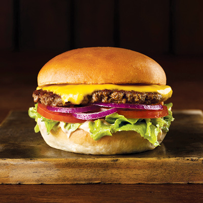

Burger recipe

Description
A grilled beef patty on a bun is called a burger. Lunch at a fast food restaurant often consists of a burger and fries. You can use the word burger as a casual shorthand for hamburger, which is ground or minced beef that's fried and served on a bun.
Ingredients
- ½ cup mayonnaise
- ¼ cup ketchup
- 3 tablespoons dill pickle relish
- 1 tablespoon Dijon mustard
- 2 pounds ground beef, 80/20
- Kosher salt and freshly ground black pepper, to taste
- 1 tablespoon canola oil
- 6 slices American cheese
How to make a Cheeseburger
- BURGER SAUCE: In a small bowl, whisk together mayonnaise, ketchup, dill pickle relish and Dijon; set aside.
- In a large bowl, combine beef, 1 1/2 teaspoons salt and 1 1/2 teaspoons pepper. Using a wooden spoon or clean hands, stir until well combined. Gently form into 6 1-inch-thick patties, about the size of the hamburger buns
- Heat canola oil in a large cast iron skillet over medium high heat. Add patties and cook until lightly charred or until desired doneness, about 3-5 minutes per side; top with cheese.
- Serve immediately in hamburger buns with BURGER SAUCE and desired toppings.
Home